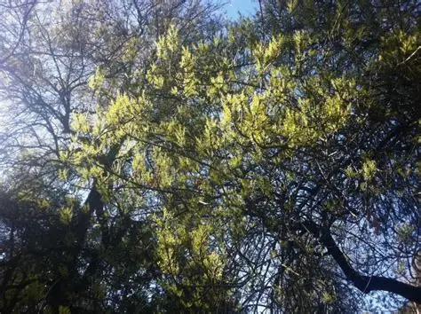
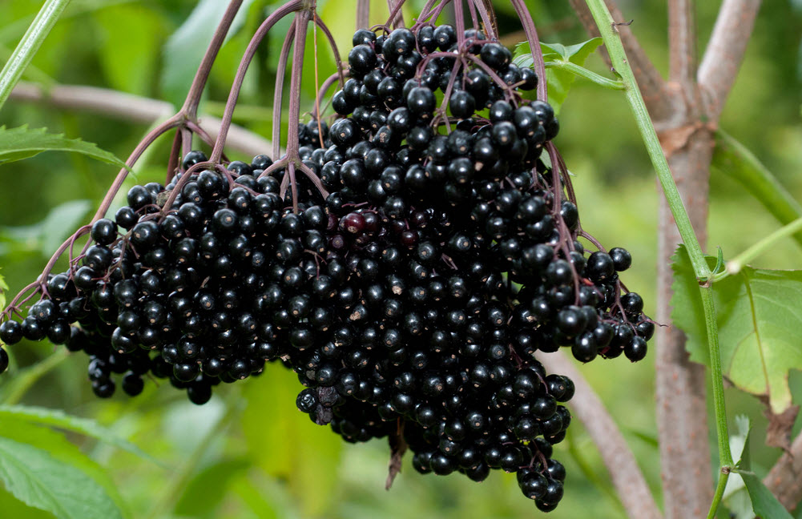
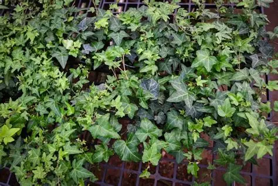
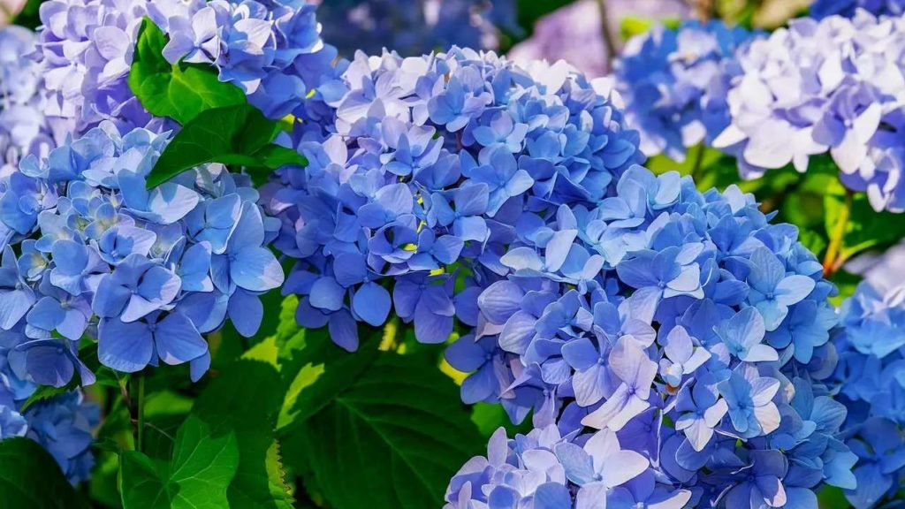

A baleia-azul é o maior animal que já existiu na Terra, podendo chegar a cerca de 30 metros de comprimento e mais de 150 toneladas.
Apesar do tamanho colossal, ela se alimenta principalmente de krill (pequenos crustáceos), filtrando toneladas de água com suas barbatanas.
É um animal pacífico, vive em mar aberto, possui vocalizações extremamente fortes — algumas das mais potentes do reino animal — e é conhecida por fazer longas migrações pelo oceano.
Infelizmente, já esteve à beira da extinção devido à caça, mas hoje está protegida internacionalmente.

A orca é um mamífero marinho da família dos golfinhos e é conhecida como a “baleia-assassina”, embora não seja uma baleia.
É um dos predadores mais inteligentes e eficientes do oceano, vivendo em grupos chamados pods, com forte organização social.
Elas caçam em equipe e podem se alimentar de peixes, focas e até grandes baleias.
São rápidas, fortes e têm alta capacidade de comunicação e aprendizagem.
A águia-real é uma das maiores e mais poderosas aves de rapina do mundo.
Ela tem grandes asas, voo muito rápido e garras fortes, usadas para caçar presas como coelhos, raposas e até animais maiores.
É conhecida pela visão extremamente aguçada, capaz de enxergar a grande distância, e por ser um símbolo de força em várias culturas.
Vive em regiões montanhosas e abertas, especialmente no hemisfério norte.
O Corvus corax, conhecido como corvo-comum, é uma das maiores e mais inteligentes aves da família dos corvídeos.
Ele possui penas totalmente pretas com brilho metálico, grande envergadura de asas e um canto característico, um “cronk” profundo.
É extremamente inteligente, capaz de usar ferramentas, resolver problemas complexos e até reconhecer rostos humanos.
Vive em várias regiões do hemisfério norte e é muito adaptável, podendo se alimentar de quase tudo — de pequenos animais a restos de comida.
O Mus musculus, conhecido como camundongo-doméstico, é um pequeno roedor encontrado no mundo inteiro.
Ele é ágil, se reproduz rapidamente e vive próximo a ambientes humanos, onde encontra abrigo e alimento.
É importante para a pesquisa científica, sendo um dos principais modelos usados em estudos de genética, medicina e comportamento.
Alimenta-se de grãos, sementes e restos de comida, e é ativo principalmente à noite.
O freixo (Fraxinus excelsior) é uma das árvores mais características das florestas britânicas. Ele cresce rápido, pode passar dos 30-35 metros, e tem copa leve, permitindo que muita luz chegue ao solo da floresta. Suas folhas compostas são longas e elegantes, e suas sementes aladas (“chaves”) se dispersam facilmente com o vento. A madeira do freixo é muito valorizada por ser forte, flexível e durável, usada em móveis, ferramentas e até arcos tradicionais. É também uma espécie importante para o ecossistema, oferecendo habitat para insetos, aves e líquens. Hoje, a árvore enfrenta forte declínio por causa da doença ash dieback, que tem afetado grande parte dos freixos no Reino Unido.
O sabugueiro (Sambucus nigra) é um arbusto vigoroso que cresce em bosques, campos e áreas rurais. Ele floresce na primavera com grandes inflorescências brancas, muito perfumadas, que atraem muitos insetos. No fim do verão, produz bagas escuras ricas em pigmentos e antioxidantes, usadas em xaropes e doces após serem cozidas. É uma planta muito adaptável, tolera solos pobres e cresce rapidamente, tornando-se comum em cercas vivas e margens de estradas. Também é importante ecologicamente, oferecendo abrigo e alimento para pássaros e pequenos animais.
A hera (Hedera helix) é uma trepadeira muito resistente e comum em florestas e jardins europeus. Ela cresce rápido, cobrindo troncos, muros e rochas, e por ser perene, mantém o verde mesmo no inverno. Suas flores, embora discretas, atraem insetos no fim do verão, e as bagas escuras que surgem depois alimentam várias espécies de aves. Além disso, tolera bem sombra e frio, o que faz dela uma planta importante para manter vida e abrigo em áreas mais fechadas da vegetação.
A hortênsia (Hydrangea macrophylla) é um arbusto ornamental muito popular por suas grandes flores em forma de bolas, que podem ser azuis, rosas, roxas ou brancas. Ela cresce bem em clima ameno e gosta de sombra parcial e solo úmido. A cor das flores muda conforme a acidez do solo: solos ácidos tendem a produzir flores azuis, enquanto solos mais alcalinos resultam em flores rosas. É comum em jardins da Europa, especialmente no Reino Unido, e floresce do final da primavera até o verão. É resistente e muito usada para decoração devido ao seu visual chamativo.
A mil-em-rama (Achillea millefolium) é uma planta muito comum em prados, campos e beiras de estrada. Ela cresce formando tufos e pode chegar a cerca de 30 a 60 cm de altura. Suas folhas são bem finas, profundamente recortadas, dando um aspecto “penugento” e aromático quando amassadas. No verão, produz cachos de pequenas flores brancas, rosadas ou levemente creme, que atraem abelhas, borboletas e outros polinizadores. É uma espécie bastante rústica, tolera frio, seca e solos pobres, espalhando-se facilmente. Além de seu valor ecológico, a mil-em-rama é tradicionalmente usada em chás e preparações herbais, sendo uma planta conhecida na medicina popular há séculos.